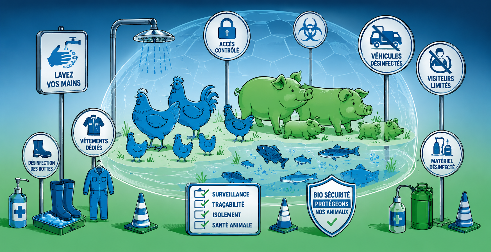
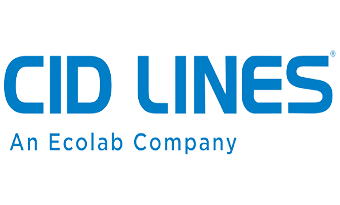

Kenosan
Détergent moussant
Nettoyage bâtiments
DécouvrirDes produits CID LINES transversaux — utilisables en volailles, porcs et poissons — et un protocole en 5 étapes pour briser la chaîne des contaminations, accompagnés par nos techniciens en Côte d'Ivoire.

Plan en 5 étapes — nettoyage à sec, détergence, rinçage, désinfection, séchage et vide sanitaire — adapté à chaque espèce et à chaque bâtiment.
Formulations homologuées, fortes concentrations en agents actifs et compatibilité eau dure, distribuées et accompagnées par MARIDAV CI.
Coaching des équipes, checklists de terrain et contrôle d'efficacité pour ancrer durablement les bonnes pratiques.
Nettoyage des circuits d'abreuvement, élimination des biofilms et dépôts calcaires pour limiter les pathogènes véhiculés par l'eau.
La biosécurité n'est pas un produit mais un enchaînement : chaque étape conditionne l'efficacité de la suivante. Nettoyer avant de désinfecter est la règle d'or.
Évacuer litière, fientes et matière organique grossière du bâtiment vidé.
Rincer abondamment à l'eau claire pour retirer détergent et salissures décollées.
Détruire les pathogènes sur surfaces propres avec Virocid, large spectre.
VirocidSécher le bâtiment, respecter le vide sanitaire et assainir les circuits d'eau (CID 2000).
CID 2000Avant le moindre traitement, la biosécurité est votre première barrière : nettoyer puis désinfecter brise la chaîne de contamination avant qu'elle n'atteigne vos animaux. Dans un contexte de pression sanitaire, c'est la protection la plus simple et la plus rentable de votre cheptel — et de votre revenu.
Toute la gamme biosécurité : nettoyer, désinfecter et assainir l'eau, sur toutes les filières.
Détergent moussant
Nettoyage bâtiments
DécouvrirDétergent acide
Dépôts minéraux & biofilms
DécouvrirDésinfectant concentré
Désinfection totale
DécouvrirDésinfectant prêt à l'emploi
Désinfection & nébulisation
DécouvrirNettoyant circuits d'eau
Hygiène des lignes d'abreuvement
DécouvrirAucun produit pour ce filtre.

Toute notre gamme d'hygiène et de désinfection s'appuie sur les solutions CID LINES, spécialiste international de la biosécurité en élevage. MARIDAV met cette expertise éprouvée — et l'appui de ses techniciens — au service de vos bâtiments, partout en Côte d'Ivoire.
Audits biosécurité, checklists et contrôle d'efficacité communiqués par nos techniciens, selon votre conduite d'élevage et vos bâtiments.
Parlez à un technicien MARIDAV : il cadre la formulation et le devis avec vous.